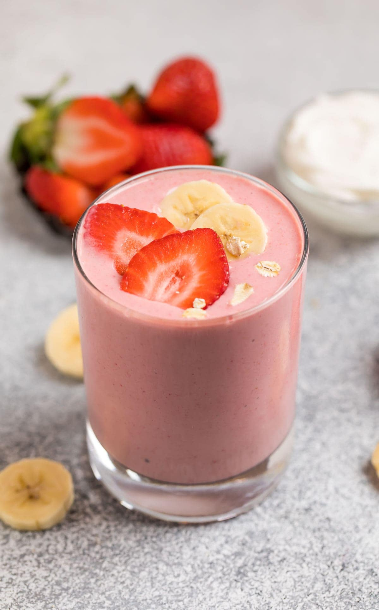

Fruit and Yogurt Smoothie Recipe

Description
This yogurt smoothie recipe is delicious! You
may substitute the strawberries for any other
berries or fruit.
Ingredients
- Strawberries: (1 cup strawberries)
- Banana: (1 banana)
- Yogurt: (½ cup yogurt)
- Pineapple and Orange Juice: (¼ cup pineapple juice)
- White Sugar: (1 and ½ teaspoons white sugar)
- Milk: (1 teaspoon milk)
Steps
- Gather all ingredients.
- Combine strawberries, banana, yogurt, pineapple juice, sugar, orange juice, and milk in a blender.
- Blend until smooth.
- Serve and enjoy!